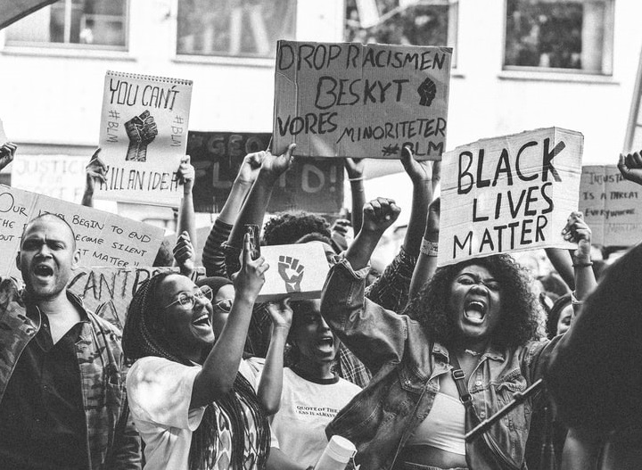
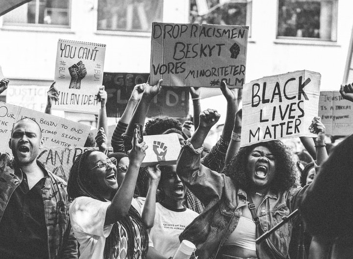

History
Immigration made America, there is no denying that. America was built by immigrants, even though it has a dark history. People came to this land to escape famine, poverty, and over taxation. And through broken promises, lies , and ultimately murdering Native Americans, America became what is known now as white. Suddenly, Native Americans became a minority, and they too face discrimination, though Natives were here first and it's their land. Natives deserve better.
 
 Then came slavery, Europeans brought Africans and other over for free work. These people were beaten, raped, dehumanized so they can "adapt to their new lifestyle". Those people fought, abolishing slavery for all. The black community has been discriminated for centuries. Although there is no longer slavery or legal segragation, they still encounter discrimination like their ancestors did. Black people are being murdered simply for having a different skin color. They are frowned upon by many people, inlcuding other minorities. Black people deserve better.


Now, there is immigration from multiple places to the United States. Millions have crossed the border, and millions are being discriminated for it. They wanted a chance for a better life, alike those who came many years before them, but for some reason now it is a crime. People are separated from their children, being held inside cages, detained the movement they had hope of a better future. It is a saying that breaks people hearts, but if you don't look white, you are discriminated. Immigrants deserve better. America deserves better.